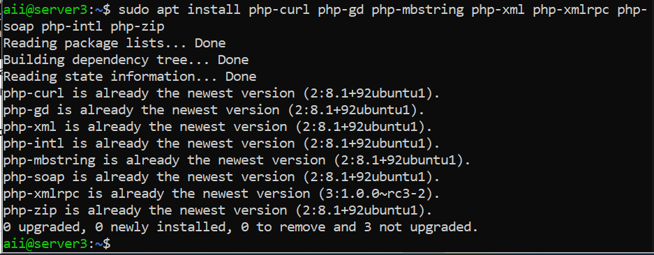

Daftar Isi
- Setup Server
- Topologi
- Prosedur Package Server
- Konfigurasi Server
- Konfigurasi Database
- Pembuatan Database
- Instalasi Wordpress
- Kesimpulan
- Daftar Pustaka
1. Setup Perangkat Lunak
Butuh beberapa resource untuk menginstall wordpress di ubuntu server
Install Server Di Virtual Mechine
- Download resource di atas dan install Virtual Mechine seperti menginstall App di Windows
- Buka Virtual Mechine dan klik New lalu masukkan file iso dari Ubuntu Servernya
- Dan Virtual Mechine akan secara otomatis langsung masuk ke penginstallan Server Ubuntunya
- Ikuti semua intruksi saat setup mesin ubuntunya
- Base Memory : 1024 MB
- Boot Order : Floppy Optical, Hard Disk
- Video Memory : 16 MB
- Graphics Controller : VMSVGA
- SATA : 10 GB
- IDE : Optical Drive
- Adabter 1 : NAT
- Adabter 2 : Host-Only
-
Web server :
- 10.0.2.15 (NAT)
- 192.168.56.8 (Host-Only)
-
Database Server :
- 10.0.2.15 (NAT)
- 192.168.56.11 (Host-Only)
| System | Spesifikasi |
|---|---|
| Web & Database Server | |
|
System :
|
|
|
Display :
|
|
|
Storage :
|
|
|
Network :
|
|
|
IP Address :
|
2. Topologi
Untuk Topologinya Dapat di gambarkan seperti di bawah ini;
3. Prosedur Package Server
Untuk Menginstall Wordpress dengan Database terpisah kita memerlukan beberpa package yang perlu di install
di masing-masing mesin.
- Package Web Server
- Apache2;
- PHP
- Mysql Client
- File Wordpress
Package Untuk Web Server;
Command line;
sudo apt install apache2

Command line;
sudo apt install php libapache2-mod-php php-mysql
Sekarang setelah menginstal PHP, penting untuk menginstal ekstensi tambahan ini yang diperlukan /
berguna bagi WordPress untuk beroperasi dalam bentuk terbaiknya ;
Command line;
sudo apt install php-curl php-gd php-mbstring php-xml php-xmlrpc php-soap php-intl php-zip

Packages mysql-client digunakan untuk mengakses database dari server databases;
Command line ;
sudo apt install mysql-client
Command line;
cd /tmp && wget https://wordpress.org/latest.tar.gz
- Package Untuk Database
- Mysql Server
Packages untuk database server;
Command line;
sudo nano mysql-server
4. Configurasi Server
-
Configurasi IP
Untuk bisa terhubung database dari database server ke web server kita perlu mengatur IP statik di kedua VM
- Web Server
- Database Server
Command line;
sudo nano /etc/netplan/00-installer-config.yaml
Command line;
sudo nano /etc/netplan/00-installer-config.yaml
- Configurasi Firewall
- Untuk bisa mengakses ke database servernya kita perlu mengaktifkan port mysql di web server;
- Untuk bisa mengakses web server dari luar kita perlu mengaktifkan port untuk apache nya atau port 80;
- Configurasi Wordpress
- Install Wordpress
Command line;
sudo ufw allow mysql” or “sudo ufw allow 3306
Command line;
sudo ufw allow in ‘Apache2’
or
sudo ufw allow 80 
Command line;
cd /tmp/ && tar -xvf latest.tar.gz
Copy file wordpressnya ke /var/www/html
Command line;
cp -R wordpress /var/www/html
Membuat direktori uploads didalam direktori wp-content dan mengganti Ownershipnya
Command line;
mkdir /var/www/html/wordpress/wp-content/uploads
chown -R www-data:www-data /var/www/html/wordpress/wp-content/uploads
5. Configurasi Database
Kita perlu mengkonfigurasi secara manual dibagian file mysql nya;
Command line;
sudo nano /etc/mysql/mysql.conf.d/mysqld.cnf
atur ipnya jadi ip dari database yang sudah di atur secara statik (Host-Only)
6. Pembuatan Database
- Create User Database wordpress1
- Create Database wp1;
- Connect Server Database dengan Webserver
Command line;
CREATE USER '{username}'@'{ip web server}' IDENTIFIED BY '{password}';
GRANT ALL PRIVILEGES ON *.* TO '{username}'@'{ip web server}';
FLUSH PRIVILEGES;

Command line;
CREATE DATABASE website;
Command line;
mysql -u aii -h 192.168.56.11 -p
7. Lakukan Installasi Wordpress
- Masukkan ip dari web_server di browser;
Command line;
http://{ip_webserver}/{folder wordpress}
wordpress1
wordpress2

wordpress3
8. Kesimpulan
Memisahkan WEB Server dan Database Server Mysql pada mesin server yang berbeda tentunya untuk meningkatkan sisi keamanan data kita yang tersimpan di server database serta bertujuan agar pemakaian sumber daya (RAM, CPU, I/O) terpisah, tidak saling membebani. Pemisahan server ini dapat dilakukan dengan mengkonfigurasi MySQL agar dapat diakses secara remote.